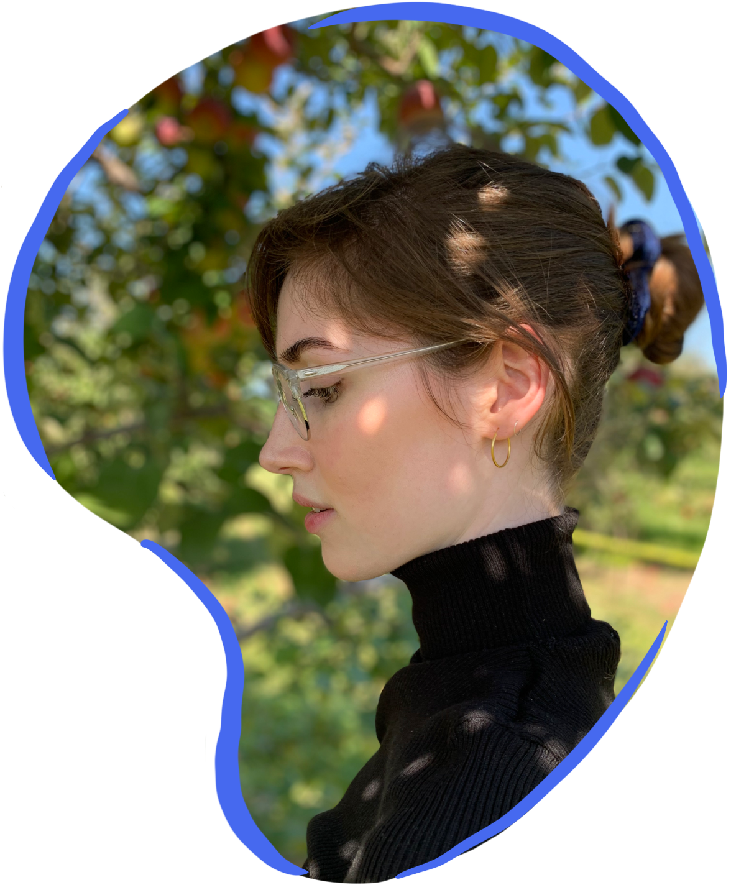
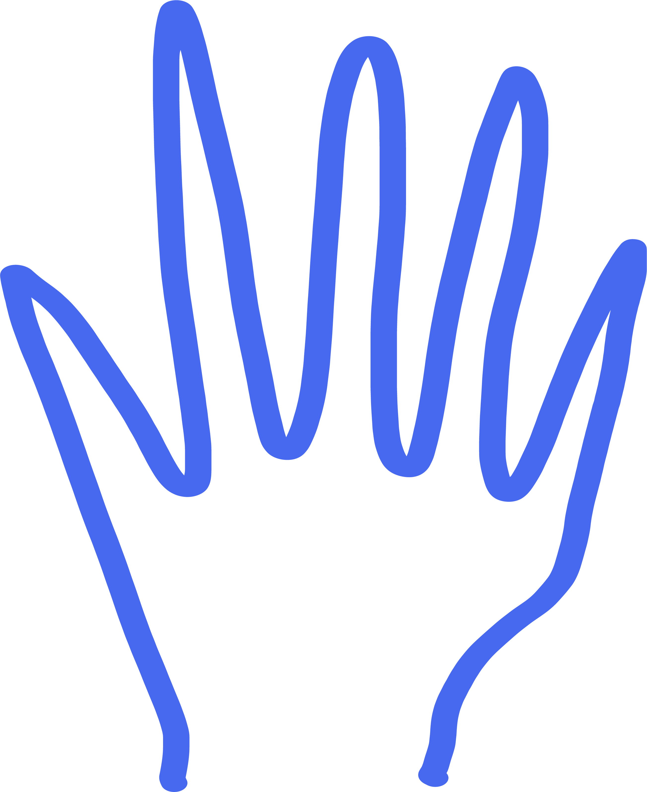

+1 437 982 5342
LinkedIn↗
CGPA: 4.0/4.0
Parsons School of Design
HBA in DEM
CGPA: 3.94/4.0
University of Toronto
Digital Designer
MaRS, 05.20–04.21
Freelance Designer;
Report Designer
The Medium II, 08.19–03.21
Director of Design;
Design Editor
Contact
sayhi.tegwen@gmail.com+1 437 982 5342
Socials
Instagram↗LinkedIn↗
Education
MPS in Communication DesignCGPA: 4.0/4.0
Parsons School of Design
HBA in DEM
CGPA: 3.94/4.0
University of Toronto
Recent Experience
imc NA, 07.21–nowDigital Designer
MaRS, 05.20–04.21
Freelance Designer;
Report Designer
The Medium II, 08.19–03.21
Director of Design;
Design Editor
hey, i'm tegwen 
When I was fourteen, I downloaded Adobe InDesign to make a four-page newsletter for a retirement home down the street. Hours later, with tears in my eyes and a newsletter typeset in Comic Sans, I asked myself: who would want this as a job?
Nine years later, I now keep two computers at my desk: Illustrator and Photoshop open on the left, Figma to my right. Their internal fans moan in harmony with me as I hit save on my “newfinalfinal_FINAL” file. Apparently, I did. I wanted that job. I’ve since grown to find motivation in the most stressful of situations, and clarity in pushing pixels around a 13-inch screen at 1200% zoom.
With two design degrees and nearly a decade of design work and under my belt, I have had multidisciplinary experience as a graphic designer, crafting everything from logos to fair trade apparel; as a UX designer, conducting research and design for new human-centered products and organizations; and as a layout designer, typesetting professional reports, creative handbooks, and all else in between. Next, I’m looking to learn how to bring my designs to life through motion graphics.
I’m also trying to learn how to sustainably survive on only coffee and three hours of sleep, and perhaps being a bit less of a yes-woman.
(Unless you have a design opportunity, then please feel free to reach out. I love design, I love work, and I’m always looking for new design work. 😊)
When I was fourteen, I downloaded Adobe InDesign to make a four-page newsletter for a retirement home down the street. Hours later, with tears in my eyes and a newsletter typeset in Comic Sans, I asked myself: who would want this as a job?
Nine years later, I now keep two computers at my desk: Illustrator and Photoshop open on the left, Figma to my right. Their internal fans moan in harmony with me as I hit save on my “newfinalfinal_FINAL” file. Apparently, I did. I wanted that job. I’ve since grown to find motivation in the most stressful of situations, and clarity in pushing pixels around a 13-inch screen at 1200% zoom.
With two design degrees and nearly a decade of design work and under my belt, I have had multidisciplinary experience as a graphic designer, crafting everything from logos to fair trade apparel; as a UX designer, conducting research and design for new human-centered products and organizations; and as a layout designer, typesetting professional reports, creative handbooks, and all else in between. Next, I’m looking to learn how to bring my designs to life through motion graphics.
I’m also trying to learn how to sustainably survive on only coffee and three hours of sleep, and perhaps being a bit less of a yes-woman.
(Unless you have a design opportunity, then please feel free to reach out. I love design, I love work, and I’m always looking for new design work. 😊)